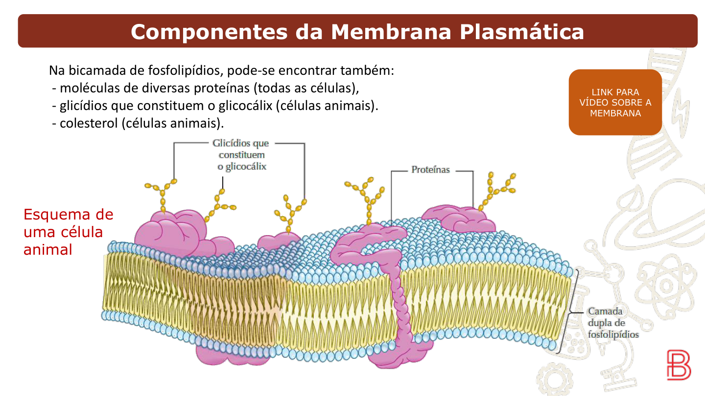
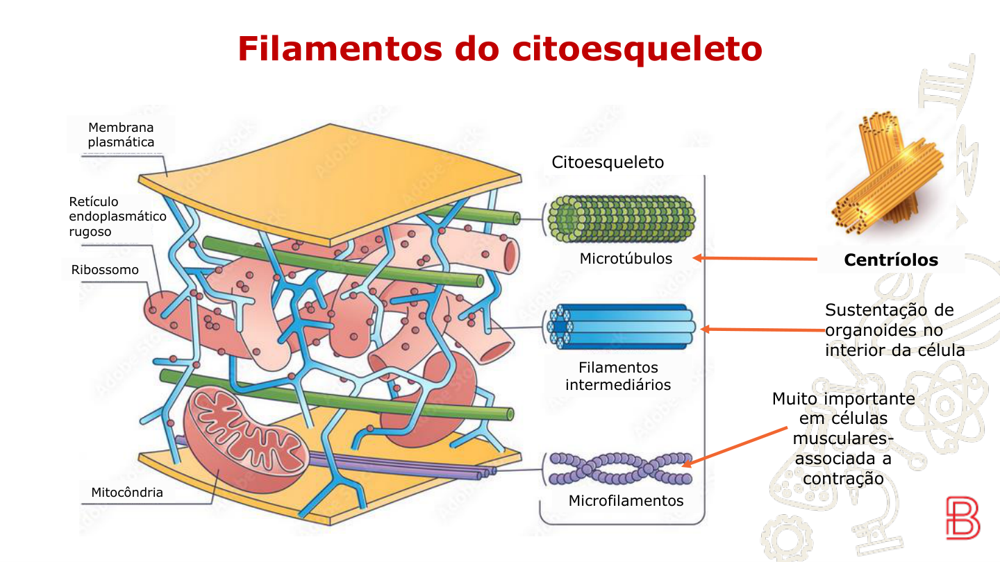
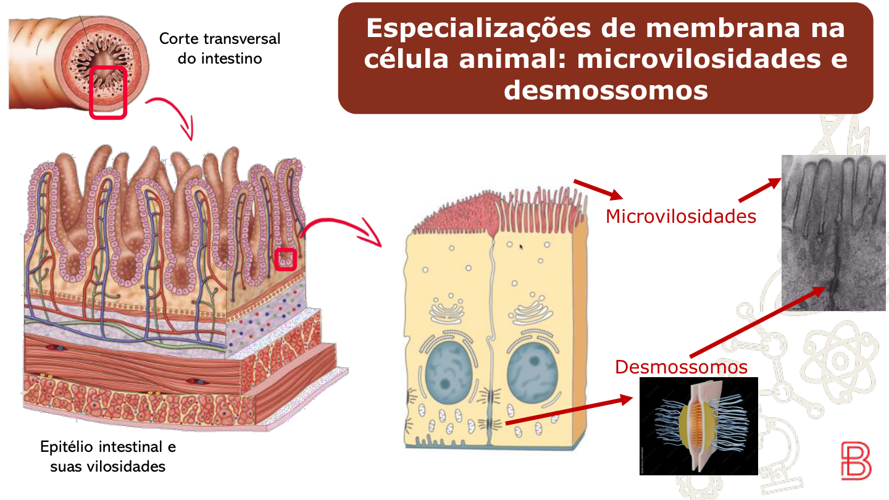
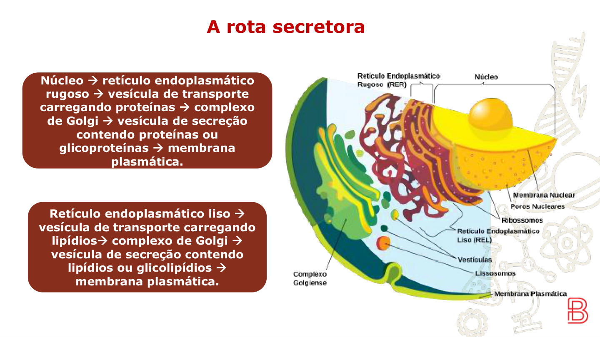

Aula 6 Membrana Plasmática
Função principal: permeabilidade seletiva — controla o que entra e sai da célula.
Também forma as membranas das organelas intracelulares (exceto ribossomos).
- Modelo: Mosaico Fluido (lipoproteico) — a membrana é fluida e os componentes se movem
- Bicamada fosfolipídica: duas camadas de fosfolipídios com as caudas voltadas para dentro
- Colesterol (só em células animais): reduz a fluidez da membrana, dando estabilidade

O fosfolipídio é o componente principal da membrana. Sua estrutura determina o comportamento da bicamada:
Cabeça — POLAR (hidrofílica)
- Glicerol + grupo fosfato (+ um grupo polar, como a colina)
- Voltada para fora (meio aquoso)
- Interage com a água
Cauda — APOLAR (hidrofóbica)
- Ácidos graxos
- Voltada para dentro da membrana
- Repele a água — forma o interior impermeável
Proteína Receptora
- Reconhece e se liga a hormônios, neurotransmissores e outras moléculas sinalizadoras
- Alta especificidade — funciona como chave-fechadura
- Ao se ligar, altera o metabolismo da célula (ex: insulina → captação de glicose)
Proteína de Reconhecimento
- Permite que outras células reconheçam a célula (identidade celular)
- Conjunto dessas proteínas forma o glicocálix (só em célula animal)
Proteína Canal
- Forma poros na membrana para passagem de íons e moléculas específicas
Proteína de Adesão
- Une células entre si, formando tecidos
Proteína de Ancoragem
- Ancora o citoesqueleto à membrana, permitindo forma e movimento celular
- Células vegetais e algas: celulose
- Fungos: quitina
- Bactérias: peptideoglicanos
Confere estrutura, sustentação, proteção e forma. Não é organizada (é fibrosa) — por isso não é semipermeável como a membrana.
Aula 7 Citoesqueleto e Transporte
Formado por 3 tipos de complexos proteicos:
Microfilamentos
- Proteína: actina + outras
- Forma, organização e estrutura da célula
Filamentos Intermediários
- Proteínas de adesão
- Ligam a célula a outras células e estruturas

Microtúbulos
- Proteína: tubulina
- Participam da formação dos centríolos (só em célula animal → infertilidade)
- Originam: flagelos (movimento do espermatozoide), cílios (epitélio da traqueia), fibras do fuso (separam os cromossomos na divisão celular)
- Participam do transporte de moléculas em vesículas (proteínas motoras deslizam sobre os microtúbulos)
A célula realiza trocas com o ambiente externo por meio de vesículas (bolsas formadas pela membrana). Esse transporte é sempre ativo (gasta ATP).
Endocitose — internalização
- Fagocitose (fagossomo): sólidos grandes, com pseudópodes (só com citoesqueleto). Ex: macrófago e neutrófilo
- Pinocitose (pinosoma): líquidos pequenos, por invaginação da membrana
Exocitose — externalização
- Clasmocitose: elimina resíduos de digestão celular (RESÍDUOS)
- Secreção: libera substâncias úteis para o organismo (HORMÔNIO, ENZIMA, ANTICORPO)
• Ativo (com gasto energético): íons, contra gradiente
• Passivo (sem gasto energético): difusão simples / difusão facilitada / osmose
Aula 8 Especializações de Membrana e Citoesqueleto
Encontradas principalmente no intestino delgado (epitélio de absorção).
- São projeções da membrana plasmática voltadas para o lúmen intestinal
- Aumentam drasticamente a superfície de contato sem aumentar o volume da célula
- Sustentadas por microfilamentos de actina (citoesqueleto)

Funcionam como "rebites" entre células adjacentes.
- Ligam células vizinhas mecanicamente
- Ancorados ao citoesqueleto de filamentos intermediários de ambas as células
- Comuns em tecidos sujeitos a stress mecânico: epitélio intestinal, pele, músculo cardíaco
Célula de Absorção
- Microvilosidades na superfície apical
- Especializada em absorver nutrientes
Célula Caliciforme
- Complexo de Golgi, mitocôndrias, vesículas de secreção, RER e núcleo bem desenvolvidos
- Especializada em secretar muco glicoproteico
Aula 9 Organelas da Rota Secretora

Função: síntese de proteínas que serão secretadas ou incorporadas à membrana.
- Os ribossomos do RER traduzem o RNAm (que saiu do núcleo) em proteína
- A proteína sintetizada é encaminhada em vesículas para o Complexo de Golgi
- Muito desenvolvido em células secretoras de proteínas (ex: células pancreáticas, células plasmáticas)
Função principal: síntese de lipídios (esteroides, fosfolipídios, hormônios sexuais).
- Muito desenvolvido em glândulas sebáceas e células que produzem hormônios esteroides
- Os lipídios sintetizados são encaminhados ao Complexo de Golgi para processamento e secreção
- Também atua na detoxificação de substâncias no fígado
- Adiciona açúcares às proteínas → glicoproteínas (ex: muco)
- Forma vesículas de secreção para exocitose
- Também origina: lisossomos e acrossomos
- Contém a enzima catalase que converte: H₂O₂ → H₂O + O₂
- Presente em grande quantidade no fígado e rins (órgãos de detoxificação)
- Diferente do lisossomo: degrada compostos tóxicos, não faz digestão intracelular de partículas
- Localizado na cabeça do espermatozoide, sobre o núcleo
- Sem ele, a fecundação é impossível
- As enzimas são liberadas ao contato com o óvulo (reação acrossômica)
- Estrutura do espermatozoide: acrossomo → núcleo → mitocôndrias → flagelo
Banco de Questões
12 questões · Membrana, Citoesqueleto, Especializações e Rota Secretora
Fosfolipídios colocados em água se organizam sozinhos em duas camadas, sem gasto de energia.
1. Isso acontece porque
I. A membrana é fluida: fosfolipídios e proteínas se deslocam lateralmente. II. O colesterol, presente nas membranas animais, reduz a fluidez e dá estabilidade. III. A parede celular é semipermeável como a membrana, pois também é uma bicamada.
2. Sobre o modelo do mosaico fluido e os envoltórios celulares, está correto o que se afirma em
A insulina só consegue agir nas células que possuem, na membrana, uma proteína específica para ela.
3. Essa proteína é do tipo
A colchicina é uma substância que impede a montagem dos microtúbulos. Ela é aplicada a células que estão se dividindo.
4. O efeito esperado é
Na síndrome de Kartagener, os homens têm espermatozoides que não se movem e as pessoas sofrem infecções respiratórias frequentes, porque o muco não é varrido da traqueia.
5. As duas alterações se explicam por um defeito no mesmo componente:
I. Macrófago englobando uma bactéria II. Célula caliciforme liberando muco III. Célula eliminando restos da digestão intracelular IV. Célula englobando gotículas de líquido
6. Os processos I, II, III e IV são, respectivamente,
Uma doença inflamatória destrói as microvilosidades do intestino delgado.
7. A consequência mais direta para o paciente é
A célula caliciforme do intestino secreta muco glicoproteico e tem RER, Complexo de Golgi e mitocôndrias muito desenvolvidos.
8. Essa combinação se explica porque
Numa célula do pâncreas, aminoácidos radioativos são usados para marcar uma enzima digestiva recém-produzida.
9. A ordem em que a radioatividade aparece nas estruturas da célula é
Compare: células dos testículos que produzem testosterona (um esteroide) e células do pâncreas que produzem enzimas digestivas (proteínas).
10. Espera-se encontrar muito desenvolvido, respectivamente,
O fígado e os rins são os órgãos com mais peroxissomos no corpo humano.
11. Isso se relaciona à função dessa organela de
Em um teste de laboratório, espermatozoides sem acrossomo nadam normalmente até o óvulo, mas não conseguem fecundá-lo.
12. Isso acontece porque o acrossomo